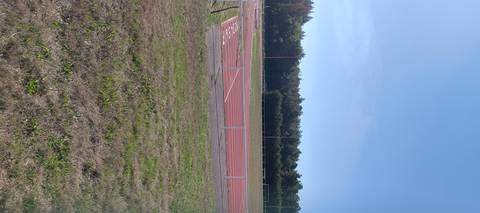
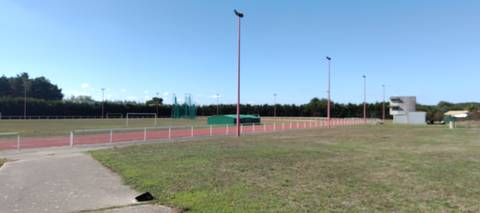
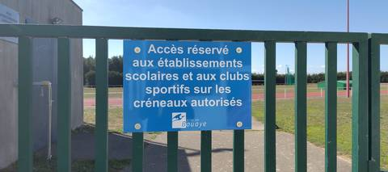

{kind=link}
{kind=link}
{kind=link}
La piste du secteur, celle où s'entraîne l'Herbauge : synthétique, six couloirs sur l'anneau et sept en ligne droite, avec tout ce qu'il faut autour — sautoirs en longueur et triple, perche, javelot, aire de poids, cage de disque et marteau. Je n'ai pas repéré de sautoir en hauteur ; ça ne veut pas dire qu'il n'y en a pas. Le problème n'est pas la piste, il est au portail : elle est fermée quasiment tout le temps, et un panneau rappelle que l'accès est réservé aux établissements scolaires et aux clubs sportifs sur les créneaux autorisés. Le 5 septembre 2026 encore, j'ai tout regardé par-dessus la clôture. Pour qui court en club, l'outil est excellent. Pour tous les autres, c'est une frustration : on voit tout et on n'entre pas.
Stade Patrick Perrais
Place de l'Edit de Nantes, 44830 Bouaye · Loire-Atlantique
Stade Patrick Perrais est un équipement d'athlétisme situé à Bouaye (Loire-Atlantique), en Pays de la Loire. Il dispose d'une piste de 400 m en synthétique (tartan), à 6 couloirs. On y trouve sautoir longueur, triple saut, sautoir à la perche, lancer du poids, lancer du disque, lancer du marteau et lancer du javelot. Le site propose l'éclairage, des vestiaires et des douches.
Photos



Il manque sûrement une photo
Les sautoirs et les aires de lancer sont ce que la donnée publique décrit le plus mal, et ce qu'on photographie le moins. Un gros plan du sol, une perche bâchée, un bac de sable envahi : chacun ajoute ce qu'aucun champ ne porte.
Envoyer une photoSans compte GitHubPiste
- Revêtement
- Synthétique (tartan)
- Développement
- 400 m
- Type de piste
- Anneau de stade d'athlétisme
- Couloirs
- 6
- Configuration
- Plein air
- Mise en service
- 1999
- Dernière rénovation
- 2001
Agrès recensés
- Sautoir longueur
- Triple saut
- Sautoir à la perche
- Lancer du poids
- Lancer du disque
- Lancer du marteau
- Lancer du javelot
Accès & services
- Accès libre
- Non / réservé
- Éclairage
- Oui
- Vestiaires
- Oui
- Douches
- Oui
- Sanitaires
- Oui
Panneau boulonné sur le portail, relevé le 5 septembre 2026 : « Accès réservé aux établissements scolaires et aux clubs sportifs sur les créneaux autorisés » (Ville de Bouaye). L'enceinte était fermée ce jour-là, comme elle l'est presque toujours. Vestiaires, douches et sanitaires sont annoncés par le recensement ; aucun n'a été vu ouvert.
Avis des athlètes
Visite du 5 septembre 2026, faite depuis l'extérieur de la clôture : l'enceinte était fermée. Six couloirs sur l'anneau, sept sur la ligne droite, numérotés au sol au départ. Agrès vus par-dessus la clôture : sautoir de longueur et de triple (plusieurs planches d'appel), sautoir à la perche, couloir de javelot, aire de lancer du poids, et une cage grillagée sur le terre-plein, qui sert le disque et le marteau. Aucun sautoir en hauteur n'a été repéré, ce qui ne vaut pas constat d'absence. Le bâtiment d'entrée porte la mention « Piste intercommunale d'athlétisme ». Cette visite remplace les agrès qui n'étaient jusqu'ici que déduits de l'orthophoto IGN. Le recensement du ministère classait le site « ouvert au public sur horaires » ; le panneau du portail dit le contraire, et la mention a été retirée — la fiche se tait sur l'accès plutôt que d'affirmer une fermeture.
Autres sites du département
- Complexe Sportif de Bellestre
- Piste de Saint-Léger-les-Vignes
- Complexe Sportif de la Croix Jeannette
- Plateau Sportif de la Bourgonniere
- Complexe Sportif de la Neustrie
- Complexe Sportif Paul Langevin
Signaler une erreur ou compléter la fiche
Réf. I440180009 · Source : Data ES + communauté — Data ES, ministère chargé des Sports, Licence Ouverte 2.0. Les données sont déclaratives et peuvent être incomplètes : vérifiez les conditions d'accès avant de vous déplacer.